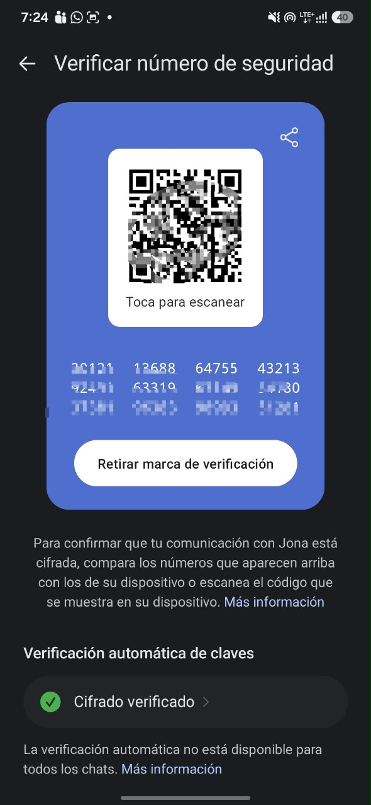

Resumen del laboratorio
En este laboratorio se separaron tres propiedades que suelen confundirse: la confidencialidad del contenido (Signal, de extremo a extremo), el cifrado del camino (un túnel WireGuard) y la metadata (quién habla con quién, cuándo y cuánto). Se levantó un túnel WireGuard, se capturó y se comprobó qué ve la red y qué ve el otro peer, se razonó qué sabe y qué no lee el servidor de Signal, y se escribió E2EE.md.
Dicho tal cual fue: el túnel se hizo entre dos contenedores Docker en una misma computadora, no con un compañero ni con un VPS. El Safety Number se verificó en Signal oficial con otra persona (Jona), y la captura tiene los números de teléfono tachados.
Estado de actividades
Parte A: Safety Number
Signal oficial (Android), conversación con Jona: la conversación quedó marcada como verificada. En la pantalla se ven el QR y el número de 60 dígitos (parcialmente difuminados), el botón Retirar marca de verificación, que solo aparece cuando ya está verificada, y Verificación automática de claves: Cifrado verificado. Teléfonos tachados.

¿Qué ataque detectaría un Safety Number que no coincide? Un ataque de intermediario (MITM) o una sustitución de keys: X3DH no puede probar por sí solo que la identity key del prekey bundle es la del contacto, y el Safety Number, derivado de las identity keys de ambos, delata si alguien se interpuso.
Parte B: qué sabe el servidor de Signal
| Dato | ¿El servidor lo sabe? | Por qué |
|---|---|---|
| Texto del mensaje | No | E2EE: las keys del Double Ratchet solo están en los dispositivos de los extremos. |
| Que su cuenta existe | Sí | Se registra con un número de teléfono; Signal pudo entregar la fecha y hora de registro. |
| Cuándo se conectó | Sí | Signal pudo entregar la última fecha de conexión. |
| Tamaño aproximado | Sí, en tránsito | Transporta el mensaje cifrado; es inferencia de diseño, no un dato que Signal diga guardar. |
| Quién envió | Busca que no | Con sealed sender el remitente va dentro del sobre cifrado. |
| Su IP mientras está conectado | Sí, en tránsito | E2EE no esconde la IP de la conexión; eso lo resuelve Tor. |
| Contactos y grupos | No | Signal los cifra de extremo a extremo y dice no tener acceso a ellos. |
Contraste con signal.org/bigbrother: lo que el servidor ve en tránsito es más que lo que guarda y puede entregar. Ante órdenes judiciales, Signal dice haber podido producir solo la fecha y hora de registro de una cuenta y su última conexión. Es la declaración del propio proveedor, no una auditoría independiente. Detalle en SIGNAL.md.
Túnel WireGuard
Dos contenedores (172.21.0.2 y 172.21.0.3), túnel 10.18.0.1 ↔ 10.18.0.2, puerto UDP 51820.
AllowedIPs solo con la IP del otro peer (/32), sin full-tunnel. Las keys se generaron dentro de cada contenedor y nunca salieron de ahí.
interface: wg0
public key: WR0ufKJn…
private key: (hidden)
listening port: 51820
peer: Gky6+el9…
endpoint: 172.21.0.3:51820
allowed ips: 10.18.0.2/32
latest handshake: 10 seconds ago
transfer: 988 B received, 1.02 KiB sent$ ping -c 5 10.18.0.2
5 packets transmitted, 5 received, 0% packet loss
rtt min/avg/max/mdev = 0.441/0.666/0.784/0.117 msLo que ve la red: captura del UDP 51820
| Tipo de mensaje | Bytes | Paquetes |
|---|---|---|
| Handshake Initiation | 148 | 1 |
| Handshake Response | 92 | 1 |
| Transport Data | 128 | 12 |
Transport Data (primeros 48 bytes):
04 00 00 00 1d 91 8f 5a 00 00 00 00 00 00 00 00 59 63 44 94 91 24 fe c7
d4 a4 e7 16 50 06 54 48 2b b3 0b 9e 25 d7 dc 66 c0 02 13 63 b1 e4 69 38
Texto "LAB18SECRET" dentro de la captura de la red: NO aparece (el payload es ilegible)Lo que ve el otro peer: dentro del túnel, ya descifrado
IP 10.18.0.1 > 10.18.0.2: ICMP echo request, id 3, seq 1, length 64
.....K.....<..j............8SECRET!LAB18SECRET!LAB18SECRET!LAB18SEC
Mi ISP / la red ve paquetes UDP entre dos IPs por el puerto 51820, con sus tamaños, tiempos y volumen, pero no el contenido.
El otro peer del túnel ve los paquetes IP completos y descifrados, y vería los destinos si el tráfico saliera del túnel.
El túnel se bajó al terminar (wg0 eliminado). Evidencia en evidence/ y detalle en WIREGUARD.md.
E2EE.md en resumen
- Forward secrecy: si un teléfono se compromete a mitad del chat, los mensajes pasados siguen protegidos porque cada message key se borra tras usarse, salvo que el historial esté en texto plano en el teléfono.
- Post-compromise security: los mensajes futuros se recuperan en cuanto entra un Diffie-Hellman nuevo que el atacante no controla, siempre que no siga dentro del dispositivo.
- Acceso excepcional contra Signal: habría que forzar copias de keys que hoy se borran por diseño o agregar una key de acceso, y ocultar el Safety Number; el punto de acceso sería el dispositivo o el proveedor de la app. Keys Under Doormats (Abelson et al., 2015) sostiene que eso crea una vulnerabilidad que no es solo para los autorizados.
- Contra WireGuard: no hay proveedor ni servidor intermedio; el acceso estaría en los propios peers o en el operador del túnel.
- Tor, Signal y WireGuard: Tor esconde quién habla con quién, Signal esconde el contenido frente al servidor y WireGuard cifra el camino frente al ISP y la red local.
Documento completo: E2EE.md (442 palabras).
Seguridad
- Ninguna
PrivateKeyen el repo: el.gitignoreexcluyeprivatekey,*.keyywg0.conf, y el script verifica que no quede ninguna enevidence/. - Solo se capturó el tráfico del propio túnel de laboratorio; nada de terceros.
- Signal solo desde el sitio oficial.
Lo que aprendimos
Aprendimos que cifrar el contenido no es esconder la conversación. En la captura de la red se ve quién habla con quién, el tamaño y los tiempos de los paquetes, aunque no se pueda leer nada, y el otro extremo del túnel sí ve todo lo que sale. En Signal pasa algo parecido: el servidor no lee los mensajes, pero sabe que la cuenta existe y cuándo se conecta. Por eso un mandato de acceso excepcional tendría que quitar la forward secrecy, que borra las keys por diseño.